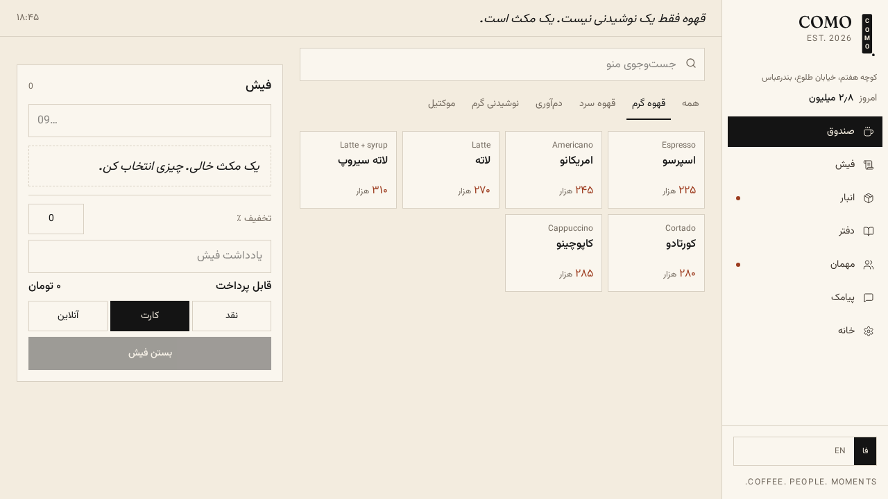
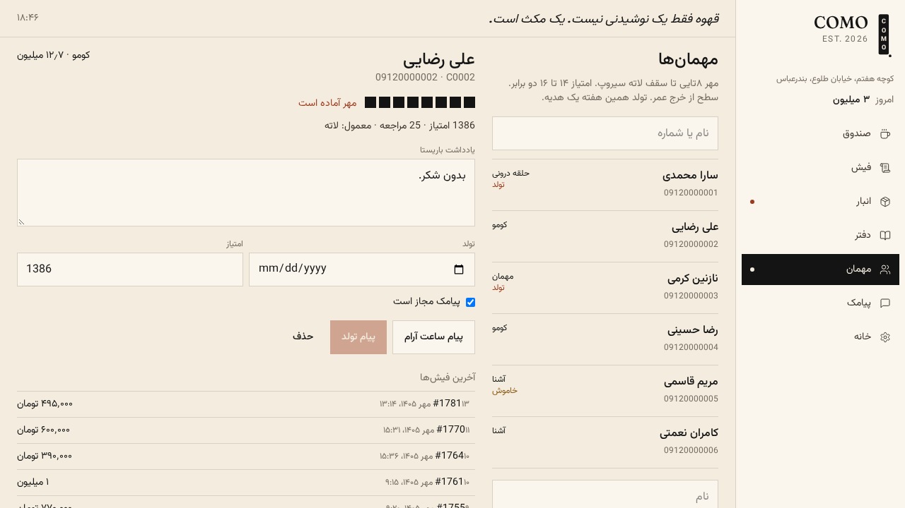
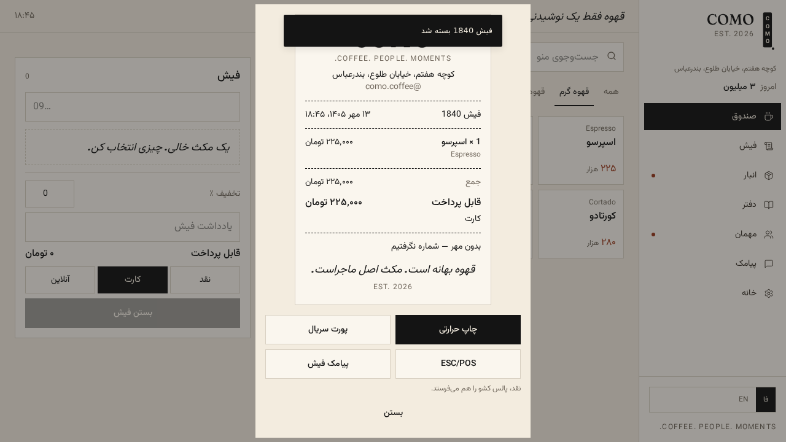
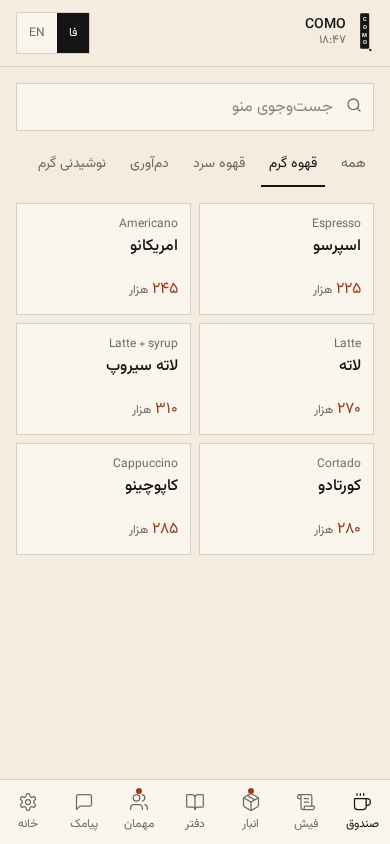

صندوق Desk
منوی دستهبندیشده، افزودنیها، تخفیف درصدی، یادداشت فیش، و سه روش پرداخت: نقد، کارت، آنلاین.
COMOدفتر کافه کومو
v1.5.1Bandar Abbas · Est. 2026
نرمافزار ادارهٔ کافهٔ کومو: صندوق، فیش، انبار، دفتر، مهمان و پیامک. فارسی و راستبهچپ، همه در یک صفحه.
COFFEE. PEOPLE. MOMENTS. کوچه هفتم، خیابان طلوع، بندرعباس
قهوه بهانه است. مکث اصل ماجراست.
۱۳ مهر ۱۴۰۵ · ۱۸:۴۵
Seven views
هر بخش کارِ روزانهٔ کافه یکی از این صفحههاست. کنار هم مینشینند و از هم تغذیه میکنند: فروش صندوق، از انبار کم میکند و امتیاز مهمان را بالا میبرد.
منوی دستهبندیشده، افزودنیها، تخفیف درصدی، یادداشت فیش، و سه روش پرداخت: نقد، کارت، آنلاین.
فیشهای باز روی میزها تا لحظهٔ بسته شدن، و بعدش چاپ حرارتی و پالس کشوی نقد.
مواد اولیه بر حسب گرم، میلیلیتر و عدد؛ نقطهٔ سفارش، و کسر خودکار بر اساس دستور ساخت هر نوشیدنی.
فروش، خرید، هزینههای جاری و کشوی نقد، با نمودار و مقایسهٔ بازهها؛ برای وقتی که باید حساب پس بدهید.
پروندهٔ هر مشتری با شماره، امتیاز، تعداد مراجعه و یادداشت؛ سطحها از «مهمان» تا «حلقهٔ درونی».
کمپین گروهی بر اساس سطح و سابقه، پیام مناسبتی تولد، و ارسال فیش برای مهمان، از طریق sms.ir.
منو و قیمتها، دستمزد، هزینههای ثابت، زبان، پشتیبانگیری و برونبری دفتر.
Local first
هیچ سروری در میان نیست. کل دفتر کافه در مرورگر همان دستگاه ذخیره میشود و برای دیدن فروش امروز به اینترنت و حساب کاربری نیاز ندارید. این انتخاب آگاهانه است، چون پیشخوان کافه جای قطعشدنِ اینترنت است.
همراه این انتخاب، لایههای محافظتی هم آمدهاند تا دادهٔ خراب یا فایل ناقص، دفتر را از کار نیندازد.
version و migrate ذخیره میشود؛ دفترهای قدیمی هنگام باز شدن به شکل تازه درمیآیند.
Screens
سه صفحه از خود برنامه، بدون بازسازی و ماکت.



Hardware
نرمافزار کافه اگر به چاپگر و کارتخوان وصل نشود، فقط یک دفتر است. این بخشها همانجا کار میکنند که کافه لازم دارد.

Two packages
برای وصل شدن به دنیای پرداخت ایران، دو بستهٔ جدا داخل مخزن نوشته شده که خودشان بهتنهایی قابل استفادهاند.
کلاینت درگاه پرداخت پارسیان
پوشش سه کار اصلی درگاه تجارت الکترونیک پارسیان، با یک کلید که از سمت سرور خوانده میشود.
پروتکل کارتخوان PEC، بازنویسیشده در جاوااسکریپت
پیادهسازی دوبارهٔ کتابخانهٔ داتنتی Intek.PcPosLibrary و سرویس پلی بین فایل، که همراه پایانههای کارتخوان PEC در ایران میآید. پروتکل روی TCP یا سریال، و جدول تشخیص بانک بر اساس پیششمارهٔ کارت.
Install
نود ۲۲ و npm کافی است. نسخهٔ دسکتاپ هم برای ویندوز، مک و لینوکس ساخته میشود.
# گرفتن مخزن و بالا آوردن git clone https://github.com/rnetis/como-cafe.git cd como-cafe npm install npm run dev # روی 0.0.0.0:8080
npm run typecheck # tsc --noEmit npm test # suiteهای node:test npm run build # بیلد + مهاجرتهای دیتابیس npm run tauri -- build # بستهٔ دسکتاپ
برچسبهای نسخه (مثل v1.5.1) از طریق
گیتهاب اکشنز، نصبکنندهٔ ویندوز، مک و لینوکس را میسازند. نصبکنندهها امضا نشدهاند.